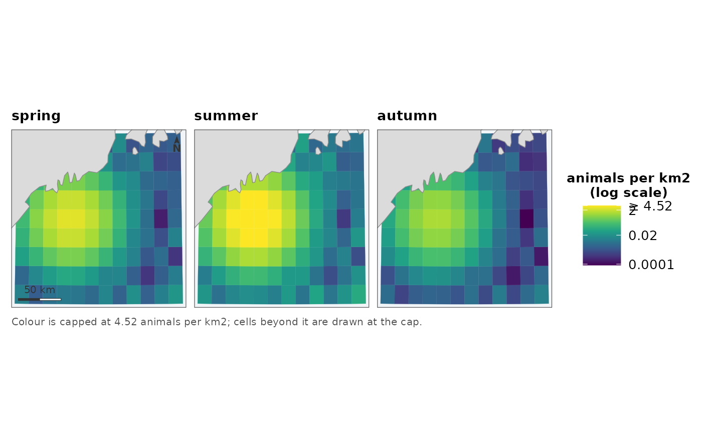

Six seasons of occupancy, twelve months of a projected surface, four candidate models over the same grid. One shared colour scale across every panel, because panels drawn separately cannot be compared and look as though they can.
Usage
map_panels(
x,
values,
by = NULL,
coords = NULL,
crs = NULL,
titles = NULL,
kind = c("surface", "probability", "diverging"),
midpoint = NULL,
direction = 1,
ncol = NULL,
label = NULL,
coastline = TRUE,
region = NULL,
transform = "auto",
limits = NULL,
probs = c(0, 0.99),
title = NULL,
subtitle = NULL,
caption = NULL,
scalebar = TRUE,
north = TRUE,
scalebar_position = "bl",
north_position = "tr",
graticule = FALSE,
base_size = 11,
expand = 0.02
)Arguments
- x
The geometry – one grid, drawn once per set of values.
- values
The panels. One of:
a character vector of column names in
x;a matrix with one row per cell and one column per period, which is the form an averaging or posterior step emits – column names become panel titles;
a named list of vectors, each in feature order or named by
by.
- by, coords, crs
Passed to
as_map_data().crsis also the CRS the map is drawn in – seedisplay_crs()for what happens when it is not given.- titles
Panel titles. Taken from the names of
valueswhen not given.- kind
How the values are scaled:
"surface","probability"or"diverging".- midpoint
The centre, for
kind = "diverging".- direction
Which way the ramp runs;
-1reverses it.- ncol
Panels per row. Chosen to keep the figure roughly square when not given.
- label
What to call the quantity in the single shared legend.
- coastline
Where land comes from.
TRUEchooses a source for the extent,FALSEdraws none, a path or ansfobject supplies one. Seecoastline().- region
An
sfpolygon to outline over the map – the study area, or whatever the grid was cropped to.- transform, limits, probs
Passed to
surface_scale(), which decides how the values are ramped and says so.- title, subtitle, caption
Figure text. The caption is where provenance belongs: which period, which product, which correction was not applied. Anything this function had to decide – a capped scale, a missing coastline – is appended to it.
- scalebar, north
Whether to draw the furniture. See
scale_bar()andnorth_arrow().- scalebar_position, north_position
Which corner each sits in:
"bl","br","tl"or"tr". Two pieces of furniture asked into the same corner are warned about rather than moved – which corner is free depends on where the data sits, and only the caller can see that.- graticule
Whether to label coordinates. Off by default; see
theme_fancymap().- base_size
Base font size in points.
- expand
How much margin to leave around the data, as a fraction of its own extent. Widen it when the data does not reach anything a reader can orient by – a small grid in open water shows no coastline at all until the panel is wide enough to include one.
The shared scale is the point
Limits and transform are computed once over every panel's values pooled together, then applied to all of them. A per-panel scale makes each panel a picture of its own relative pattern, and lays them out in a grid that invites reading across – so a quiet season and a busy one look identical and the difference between them, the only thing a series is for, is the one thing that has been scaled away.
This is also why the transform is fixed once. surface_scale()'s automatic
choice depends on the data it sees; letting each panel choose would give a
log scale to the skewed months and a linear one to the flat ones.
Extent and land
One extent, one projection, one coastline object, resolved once and used by every panel. The scale bar and north arrow are drawn on the first panel only.
Examples
grid <- example_grid()
# three periods held on one scale
seasons <- cbind(spring = grid$density,
summer = grid$density * 2.5,
autumn = grid$density * 0.4)
map_panels(grid, seasons, label = "animals per km2")
#> scale: log, chosen because the 99th percentile is 250 times the median.
#> Pass `transform =` to fix it, if two figures need to match.
